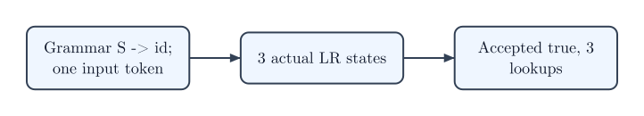
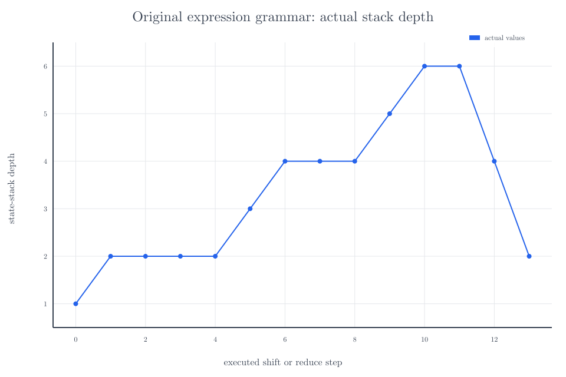
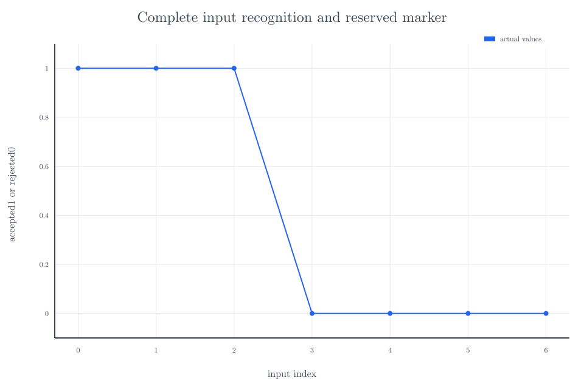
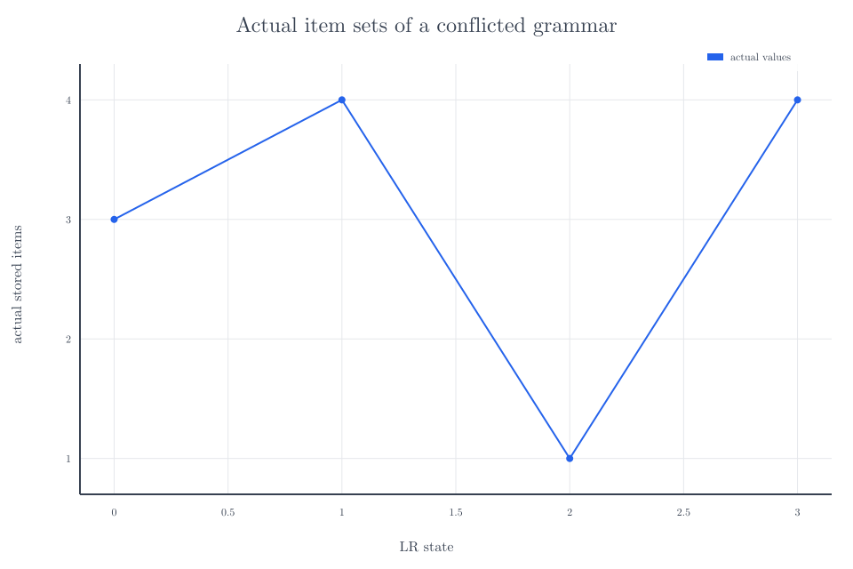

SLR: actual LR construction and parse stacks
Abstract
A token sequence must be recognized against a context-free grammar, including natural left recursion. SLR builds LR(0) item states and allows reductions only on the completed rule's FOLLOW terminals. We inspect actual constructed sets/actions and executed stacks, retain the original expression grammar, and reject unsafe conflicted-table parsing.
Mechanism and mathematical scope
An item A -> alpha dot beta records a recognized prefix. Closure adds every B -> dot gamma when the dot precedes nonterminal B. GOTO advances the dot over one symbol and closes the result. These actual sets form the deterministic viable-prefix automaton.
A terminal transition produces shift; a completed A -> alpha reduces only for lookaheads in FOLLOW(A). Reducing pops alpha states and follows GOTO for A; epsilon pops zero. The synthetic completed start accepts at the sole appended end marker. A grammar is SLR(1) only if no ACTION key requires different actions. FIRST/FOLLOW are fixed points, not single-pass approximations.
The state stack denotes a viable prefix. Shift extends it by a terminal and reduction replaces a recognized handle by its nonterminal, so an accept at the end recognizes the complete input. The trace below comes from these actual lookups. SLR is a restricted LR construction; an arbitrary LR grammar need not be SLR, and grammar-class comparisons with all LL(k) languages require care. There is no claim that all top-down parser techniques fail on every left-recursive grammar transformation.
LR state counts can grow exponentially with grammar size. Explicit ordered sets and repeated closures are bounded separately from parse actions; captured whole stacks can be much larger than the token stream. Nullable cycles and bad grammars cannot run without an explicit action limit.
A tiny actual producing history
The table and native concept diagram read the same producing execution. Every block below is a complete editable C++ program.
#include <dm/dm.hpp>
int main() {
namespace a = dm::algorithms;
namespace g = dm::graphics;
std::filesystem::create_directories("build");
a::ContextFreeGrammar grammar{{{"S", {"id"}}}, "S"};
a::SLRParser parser(grammar);
auto r = parser.parse_trace({"id"});
std::print("| consumed | actual lookahead | action | value | actual state stack |\n| ---: | --- | --- | " "---: | --- |\n");
for (const auto &s : r.steps)
std::print("| {} | `{}` | {} | {} | `{}` |\n", s.input_offset,
s.lookahead, s.action, s.value, s.states);
g::Diagram concept_diagram(48, 1100);
concept_diagram.node("n0", {0, 0}, "Grammar S -> id; one input token");
concept_diagram.node("n1", {5, 0},
std::format("{} actual LR states", parser.state_count()));
concept_diagram.node("n2", {10, 0},
std::format("Accepted {}, {} lookups", r.accepted,
r.actions));
concept_diagram.edge("n0", "n1").edge("n1", "n2");
concept_diagram.save_svg("build/slr_tiny.svg");
}| consumed | actual lookahead | action | value | actual state stack |
|---|---|---|---|---|
| 1 | id | shift | 2 | [0, 2] |
| 1 | $ | reduce | 1 | [0, 1] |
| 1 | $ | accept | 0 | [0, 1] |

The retained original experiment
#include <dm/dm.hpp>
int main() {
namespace a = dm::algorithms;
namespace g = dm::graphics;
std::filesystem::create_directories("build");
a::ContextFreeGrammar grammar{{{"E", {"E", "+", "T"}}, {"E", {"T"}},
{"T", {"T", "*", "F"}}, {"T", {"F"}},
{"F", {"(", "E", ")"}}, {"F", {"id"}}}, "E"};
a::SLRParser parser(grammar);
auto build = parser.inspection();
std::print("| nonterminal | actual FIRST | actual FOLLOW |\n| --- | --- | --- |\n");
for (const std::string symbol : {"E", "T", "F"})
std::print("| {} | `{}` | `{}` |\n", symbol, build.first.at(symbol),
build.follow.at(symbol));
std::print("\n| LR state | production index | actual dot |\n| ---: | ---: | ---: |\n");
for (std::size_t i = 0; i < build.states.size(); ++i)
for (const auto &item : build.states[i])
std::print("| {} | {} | {} |\n", i, item.production, item.dot);
auto r = parser.parse_trace({"id", "+", "id", "*", "id"});
std::vector<double> x, y;
std::print("\n| actual step | state-stack depth |\n| ---: | ---: |\n");
for (std::size_t i = 0; i < r.depths.size(); ++i) {
std::print("| {} | {} |\n", i, r.depths[i]);
x.push_back(i);
y.push_back(r.depths[i]);
}
auto plot = g::RPlot::create();
plot.lines(x, y, "actual values", {37, 99, 235}).points(x, y, {37, 99, 235},
4).title(
"Original expression grammar: actual stack depth").x_label(
"executed shift or reduce step").y_label("state-stack depth");
plot.save_svg("build/slr_original.svg");
}| nonterminal | actual FIRST | actual FOLLOW |
|---|---|---|
| E | {"(", "id"} | {"$", ")", "+"} |
| T | {"(", "id"} | {"$", ")", "*", "+"} |
| F | {"(", "id"} | {"$", ")", "*", "+"} |
| LR state | production index | actual dot |
|---|---|---|
| 0 | 0 | 0 |
| 0 | 1 | 0 |
| 0 | 2 | 0 |
| 0 | 3 | 0 |
| 0 | 4 | 0 |
| 0 | 5 | 0 |
| 0 | 6 | 0 |
| 1 | 1 | 0 |
| 1 | 2 | 0 |
| 1 | 3 | 0 |
| 1 | 4 | 0 |
| 1 | 5 | 0 |
| 1 | 5 | 1 |
| 1 | 6 | 0 |
| 2 | 0 | 1 |
| 2 | 1 | 1 |
| 3 | 4 | 1 |
| 4 | 2 | 1 |
| 4 | 3 | 1 |
| 5 | 6 | 1 |
| 6 | 1 | 1 |
| 6 | 5 | 2 |
| 7 | 1 | 2 |
| 7 | 3 | 0 |
| 7 | 4 | 0 |
| 7 | 5 | 0 |
| 7 | 6 | 0 |
| 8 | 3 | 2 |
| 8 | 5 | 0 |
| 8 | 6 | 0 |
| 9 | 5 | 3 |
| 10 | 1 | 3 |
| 10 | 3 | 1 |
| 11 | 3 | 3 |
| actual step | state-stack depth |
|---|---|
| 0 | 1 |
| 1 | 2 |
| 2 | 2 |
| 3 | 2 |
| 4 | 2 |
| 5 | 3 |
| 6 | 4 |
| 7 | 4 |
| 8 | 4 |
| 9 | 5 |
| 10 | 6 |
| 11 | 6 |
| 12 | 4 |
| 13 | 2 |

Explicit controls
#include <dm/dm.hpp>
int main() {
namespace a = dm::algorithms;
namespace g = dm::graphics;
std::filesystem::create_directories("build");
a::ContextFreeGrammar grammar{{{"E", {"E", "+", "T"}}, {"E", {"T"}},
{"T", {"T", "*", "F"}}, {"T", {"F"}},
{"F", {"(", "E", ")"}}, {"F", {"id"}}}, "E"};
a::SLRParser parser(grammar);
const std::vector<std::vector<std::string>> inputs{{"id", "+", "id", "*",
"id"},
{"(", "id", "+", "id",
")", "*", "id"}, {"id"},
{"id", "+"},
{"id", "id"},
{"id", "$", "id"}, {}};
std::vector<double> x, y;
std::print("| original/control input | accepted | consumed | actual lookups |\n| --- | --- | ---: | " "---: |\n");
for (std::size_t i = 0; i < inputs.size(); ++i) {
auto r = parser.parse_run(inputs[i]);
std::print("| `{}` | {} | {} | {} |\n", inputs[i], r.accepted,
r.consumed, r.actions);
x.push_back(i);
y.push_back(r.accepted ? 1 : 0);
}
auto plot = g::RPlot::create();
plot.lines(x, y, "actual values", {37, 99, 235}).points(x, y, {37, 99, 235},
4).title(
"Complete input recognition and reserved marker").x_label("input index").y_label("accepted1 or rejected0");
plot.save_svg("build/slr_controls.svg");
}| original/control input | accepted | consumed | actual lookups |
|---|---|---|---|
["id", "+", "id", "*", "id"] | true | 5 | 14 |
["(", "id", "+", "id", ")", "*", "id"] | true | 7 | 19 |
["id"] | true | 1 | 5 |
["id", "+"] | false | 2 | 6 |
["id", "id"] | false | 1 | 2 |
["id", "$", "id"] | false | 0 | 0 |
[] | false | 0 | 1 |

Actual selected work and sensitivity
#include <dm/dm.hpp>
int main() {
namespace a = dm::algorithms;
namespace g = dm::graphics;
std::filesystem::create_directories("build");
a::ContextFreeGrammar grammar{{{"S", {"S", "S"}}, {"S", {"a"}}}, "S"};
a::SLRParser parser(grammar);
auto build = parser.inspection();
std::vector<double> x, y;
std::print("| actual state | stored items |\n| ---: | ---: |\n");
for (std::size_t i = 0; i < build.states.size(); ++i) {
std::print("| {} | {} |\n", i, build.states[i].size());
x.push_back(i);
y.push_back(build.states[i].size());
}
std::print("\nActual conflicts {}; is_slr {}.\n", build.conflicts,
parser.is_slr());
try {
parser.parse_run({"a", "a"});
} catch (const std::logic_error &e) {
std::print("Conflicted parse rejected: {}.\n", e.what());
}
auto plot = g::RPlot::create();
plot.lines(x, y, "actual values", {37, 99, 235}).points(x, y, {37, 99, 235},
4).title(
"Actual item sets of a conflicted grammar").x_label("LR state").y_label(
"actual stored items");
plot.save_svg("build/slr_work.svg");
}| actual state | stored items |
|---|---|
| 0 | 3 |
| 1 | 4 |
| 2 | 1 |
| 3 | 4 |
Actual conflicts 1; is_slr false. Conflicted parse rejected: SLR: conflicted table.

API and interpretation
Empty RHS represents epsilon; empty symbol strings and reserved $/_START_ symbols are invalid grammar symbols. A defined start rule is required. Constructed state/table snapshots own copies. Parsing a conflicted grammar throws, unknown terminals reject, and an embedded end marker rejects rather than allowing an early prefix accept. The legacy depth trace remains initial depth plus actual shift/reduce depths, empty on rejection. No real dataset is needed for this grammar mechanism.
Reusable producers, fixtures and histories live in the canonical C++ library. Captured records own their values and do not come from a separate report replay. Selected counters and record/scalar policies are specified at their API boundaries; they are not peak-byte or wall-time budgets. Synthetic structural inputs are controlled fixtures for these mechanisms.
References
Verified in the shared ten-document batch: 67 scoped native cases and9 formatter
cases;20 directly instrumented ASan/UBSan cases;87 executable public
examples;402/402 full-file definitions across29 scopes;10 hovers;10569
independent records/108541 checks;frozen comparisons across all ten families
with density-rank, long-prefix arithmetic, initial residual and complete-input
corrections recorded;15 checkout/installed standalone headers and linked
ten-family consumer;40 executed programs and40 inspected figures with both
exports. Receipts: build/mepml-conversion/batch-364-373/.